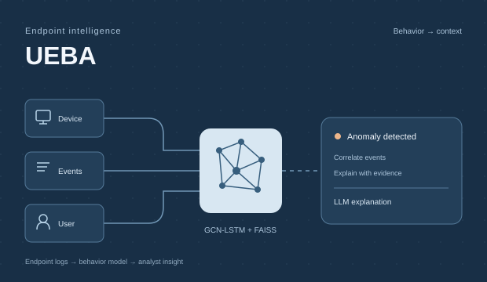
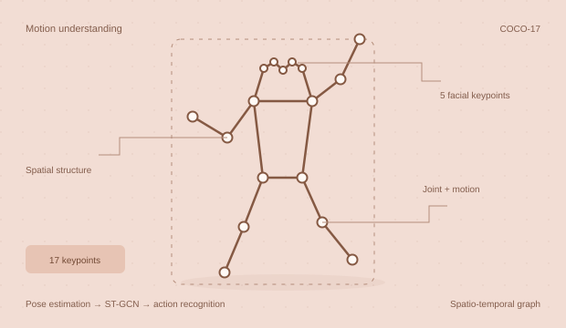

Team project
UEBA Endpoint Monitoring
Detecting anomalous behavior in endpoint logs with GCN-LSTM, FAISS, and LLM-based alert explanations for analysts.
Mai Ngọc Duy / AI Engineer
I explore how machines see, understand, and act. From computer vision and robotics to LLM agents, I turn research ideas into systems that can be tested and evaluated.
Selected projects
Research, experiments,
and things I’ve built.

Detecting anomalous behavior in endpoint logs with GCN-LSTM, FAISS, and LLM-based alert explanations for analysts.

Skeleton-based action recognition with ST-GCN on NTU RGB+D 60, integrating MMPose, joint/motion streams, and video inference.
A birdcall classification pipeline using voice-filtered spectrograms, EfficientNet-B0, and FocalBCE with label smoothing.
Recognizing Sino-Nom characters in historical manuscripts through data analysis, preprocessing, and evaluation of ResNet-18/34/50.
My journey
From the research lab
to real-world applications.
Evaluated vision-language planners for multi-object manipulation and explored reasoning → localization → segmentation pipelines. Researched 6D pose estimation, automatic label generation, and stereo fusion for YOLO11m.
Studied and practiced LLM/agent evaluation, production RAG, GraphRAG, LoRA/QLoRA, LangGraph, observability, guardrails, and human-in-the-loop design.
Researched computer vision models and built an automated professionalism evaluation system: YOLO for accessory detection, Hough Circle Transform for watch verification, and SAM for face and hair segmentation. Optimized models for edge devices.
About me
I like understanding how a model works — and what happens when it leaves the benchmark.
I’m studying Computer Science at the University of Engineering and Technology, Vietnam National University, Hanoi (VNU-UET), class of 2022–2026. My focus is computer vision and applied AI: reading papers, reproducing results, designing experiments, and building measurable pipelines.
VNU-UET · 09/2022 – 12/2026 (expected)
Aptis ESOL B2 · British Council · 04/2023Get in touch
AI, research, or opportunities to work together —
I’m always open to a conversation.
duyhg123hg@gmail.com